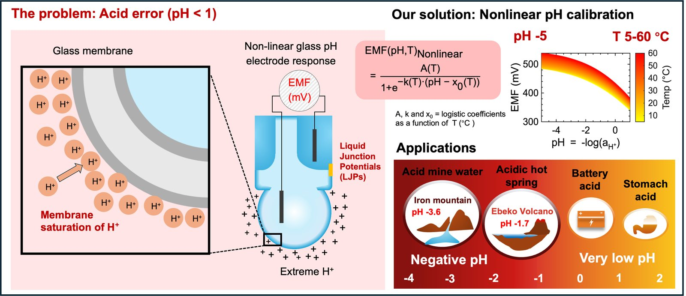
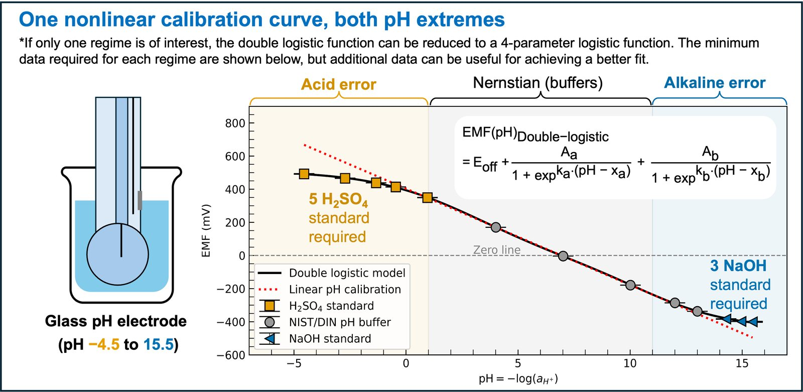

Background
A glass pH electrode responds linearly to pH only between about pH 1 and pH 11. Below pH 1 the acid error sets in: the glass membrane becomes saturated with hydrogen ions, the electrode reads too high, and the error grows with acid concentration and changes with temperature. Above about pH 11 the mirror-image alkaline error appears. Many natural and industrial systems sit in exactly those ranges, from sulphate-rich aerosol droplets and acid mine drainage to concentrated process acids, yet pH values reported for them are often taken from uncorrected electrodes.
Working on Fe(II) oxidation in sulphuric acid, I needed trustworthy pH values down to and below zero. That need became a research thread of its own.
What I did
I characterised the response of glass electrodes in sulphuric acid solutions of known activity and developed a temperature-dependent nonlinear calibration that corrects the acid error, extending the usable range of a standard electrode to pH −5 across 5 to 60 °C. Because the logistic coefficients are expressed as functions of temperature, there is no need to establish a new calibration curve every time the temperature changes (ACS Omega, 2026).
A second study extended the same idea to the other end of the scale. A double-logistic function fits the acid error, the Nernstian buffer region and the alkaline error in one curve, giving a single calibration framework that covers pH −4.5 to 15.5 with improved statistical treatment of both errors (Talanta, 2026). A third study, now under review, derives transferable correction factors so that a laboratory can apply the method to its own electrode without repeating the full characterisation.
The calibration is implemented in open software, NegativePH, that performs temperature-compensated nonlinear calibration for very low and negative pH work.
Why it matters
Reliable pH at extreme acidity makes kinetic and thermodynamic measurements in those regimes comparable across laboratories. For atmospheric chemistry in particular, it allows laboratory experiments to be run at the acidities that thermodynamic models predict for real aerosol, rather than at the mild acidities that conventional electrodes can report.
Key results


Methods and tools
glass pH electrodes · Metrohm Titrando automated titration · Python · MATLAB
Software
An interactive Python script for establishing your own nonlinear calibration of a glass pH electrode for negative-pH work.
Related publications
- Saleesongsom, S., Plancherel, Y., & Weiss, D. (2026). Optimising nonlinear calibration of glass pH electrodes over the pH range −4.5 to 15.5 using improved statistical treatment of acid and alkaline errors. Talanta, 130486. 10.1016/j.talanta.2026.130486
- Saleesongsom, S., Weiss, D., & Plancherel, Y. (2026). Temperature-dependent nonlinear calibration of glass pH electrodes for negative pH applications. ACS Omega, 11(27), 40120–40133. 10.1021/acsomega.6c01903
- Saleesongsom, S., Guillaume, L., Phillips, E., Plancherel, Y., & Weiss, D. Transferable correction factors for nonlinear calibration of glass pH electrodes in negative pH applications. Analytical Chemistry.under review
Collaborators
Dominik Weiss (Imperial), Yves Plancherel (Imperial), Louise Guillaume (Imperial), Elizabeth Phillips (Imperial).